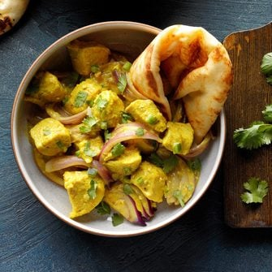

Mughali Chicken
I enjoy cooking for my family and try to incorporate healthy new foods into our menus. This authentic Indian dish is a favorite.
Ingredients
- 4 cardamom pods
- 10 garlic cloves, peeled
- 6 whole cloves
- 4 teaspoons chopped fresh gingerroot
- 1 tablespoon unblanched almonds
- 1 tablespoon salted cashews
- 1 teaspoon ground cinnamon
- 6 small red onions, halved and sliced
- 4 jalapeno peppers, seeded and finely chopped
- 1/4 cup canola oil
- 3 tablespoons water
- 1 or half a pound boneless skinless chicken breasts, cut into 1/2 inch cubes
- 1 cup coconut milk
- 1 cup plain yogurt
- 1 teaspoon ground turmeric
- 5 Fresh cilantro leaves
Steps
-
Remove seeds from cardamom pods; place in a food processor.
-
Add the garlic, cloves, ginger, almonds, cashews and cinnamon; cover and process until blended. Set aside.
-
In a large skillet, saute onions and jalapenos in oil until tender.
-
Stir in water and the garlic mixture. Add the chicken, milk, yogurt and turmeric.
-
Bring to a boil. Reduce heat; simmer, uncovered, until chicken juices run clear, 8-10 minutes. Sprinkle with cilantro.
Links